Demonstrate the AttitudeProfileWithCon function.
Plots the resulting quaternion and the separation angle from the secondary target.
Mode 1: Body y to Sun (Body x to Nadir secondary) Mode 2: Body x to Lat/Lon (Body y to Sun secondary) Mode 3: Different Lat/Lon
------------------------------------------------------------------------ See also AttitudeProfileWithCon, ObservationTimeWindows, Q2Eul, Plot2D, Date2JD, ObservationTimeWindowsPlot, Period, RVFromKepler ------------------------------------------------------------------------
Contents
- orbit and time information
- mode 1: Body y to Sun (Body x to Nadir secondary)
- mode 2: Body x to Lat/Lon (Body y to Orbit-Normal secondary)
- mode 3: Body x to Lat/Lon (Body y to Sun secondary)
- compute observation windows for this target
- compute the attitude profile
- plot quaternion and separation angle over time
- Attitude Profile Plots
- 3D Vis with a cone
%-------------------------------------------------------------------------- % Copyright (c) 2009 Princeton Satellite Systems, Inc. % All rights reserved. %-------------------------------------------------------------------------- clear a; clear b; clear c; clear d;
orbit and time information
%---------------------------
d.jD0 = Date2JD([2012 7 3 18 0 0]);
d.t = 0:1:9000;
d.el = [6978,pi/6,pi/3,0,0,0];
[d.r,d.v] = RVFromKepler( d.el, d.t );
mode 1: Body y to Sun (Body x to Nadir secondary)
%--------------------------- a.type1 = 'sun'; a.body1 = [0;1;0]; a.target1 = []; a.type2 = 'nadir'; a.body2 = [1;0;0]; a.target2 = []; a.nCon = 2; a.typeCon = {'earth','moon'}; a.bodyCon = repmat(Unit([0;0;1]),1,2); a.targetCon = zeros(3,2); a.minSepCon = [.85 1.25];
mode 2: Body x to Lat/Lon (Body y to Orbit-Normal secondary)
%--------------------------- b.type1 = 'latlon'; b.body1 = [1;0;0]; b.target1 = [10;-120]; b.type2 = 'orbitnormal'; b.body2 = [0;1;0]; b.target2 = []; b.nCon = a.nCon; b.typeCon = a.typeCon; b.bodyCon = a.bodyCon; b.targetCon = a.targetCon; b.minSepCon = a.minSepCon;
mode 3: Body x to Lat/Lon (Body y to Sun secondary)
%--------------------------- c.type1 = 'latlon'; c.body1 = [1;0;0]; c.target1 = [-24.5;85]; c.type2 = 'sun'; c.body2 = [0;1;0]; c.target2 = []; c.nCon = a.nCon; c.typeCon = a.typeCon; c.bodyCon = a.bodyCon; c.targetCon = a.targetCon; c.minSepCon = a.minSepCon;
compute observation windows for this target
%--------------------------------------------
fov = pi;
[track,obs] = ObservationTimeWindows( d.el, [b.target1,c.target1], d.jD0, d.t(end), fov );
b.window = obs(1).window;
c.window = obs(2).window;
ObservationTimeWindowsPlot(track,obs);
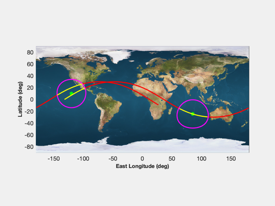 compute the attitude profile
%-----------------------------
d = AttitudeProfileWithCon( d, a, b, c );
plot quaternion and separation angle over time
%----------------------------------------------- Plot2D(d.t/3600,d.q,'Time (hrs)','Quaternion') Plot2D(d.t/3600,d.sep*180/pi,'Time (hrs)','Separation Angle (deg)') eul = zeros(3,length(d.t)); for k = 1:length(d.t) eul(:,k) = Q2Eul( d.q(:,k) ); end Plot2D(d.t/Period(6800),eul*180/pi,'Time (orbits)',{'Roll','Pitch','Yaw'},'Euler Angles (deg)')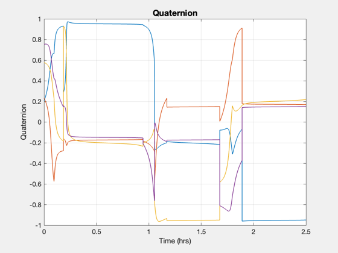 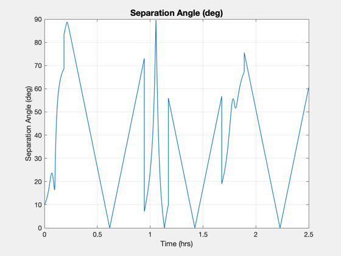 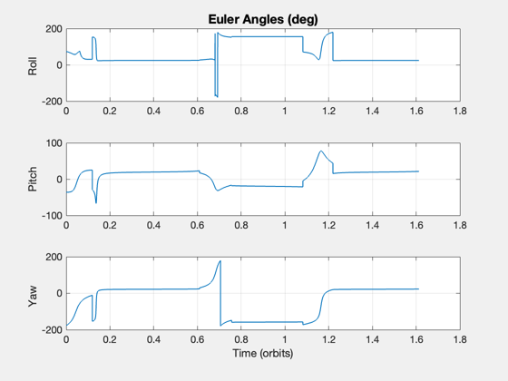
Attitude Profile Plots
AttitudeProfilePlots(d)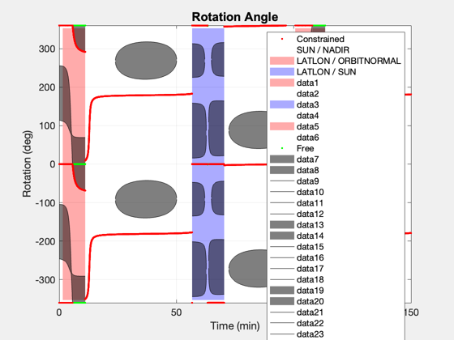 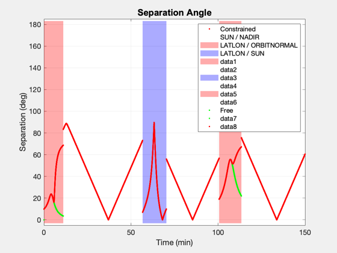 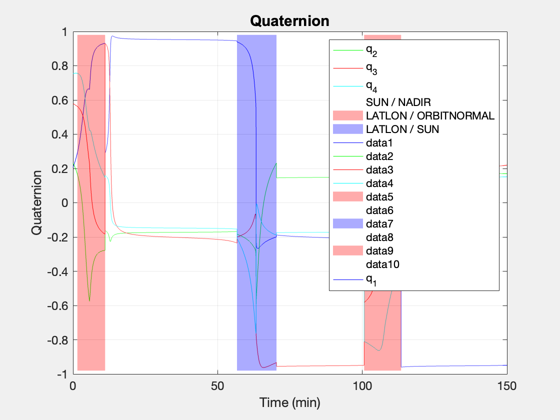 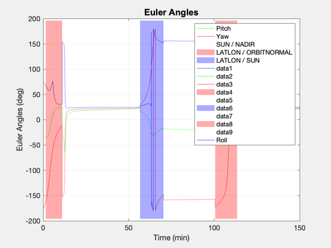 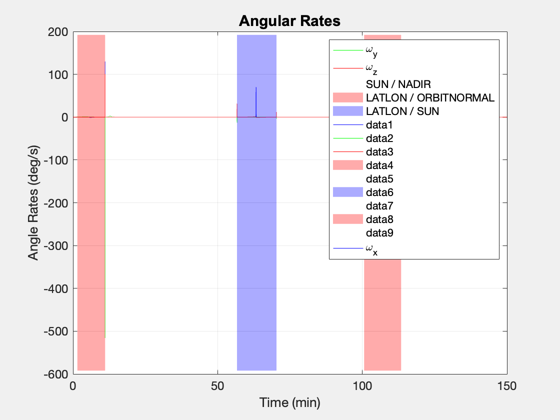 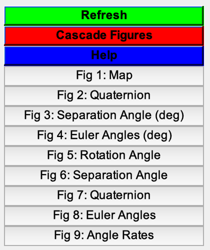
3D Vis with a cone
cone.uB = a.bodyCon(:,1); cone.fov = 25*pi/180; cone.color = 'm'; cone.alpha = .4; cone.name = 'Sensor FOV'; AttitudeProfileVis(d,[],cone); %-------------------------------------- % $Id: bd29d53724eb643fedb061bf2e9d7970cca2a918 $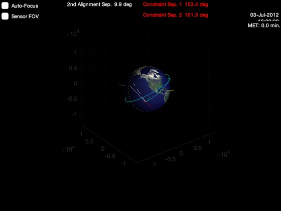 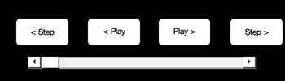